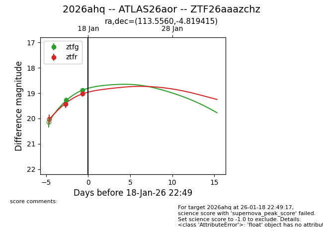
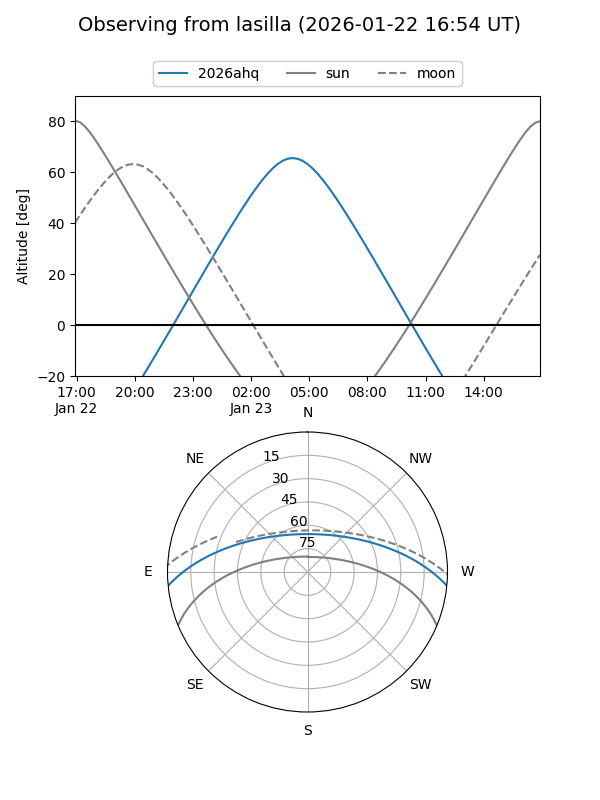
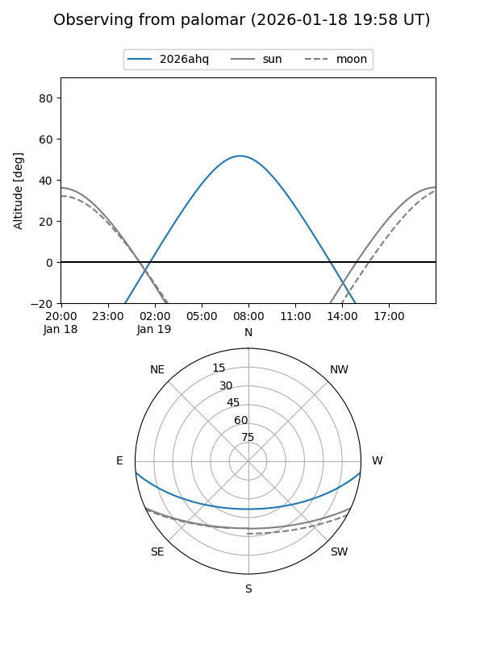
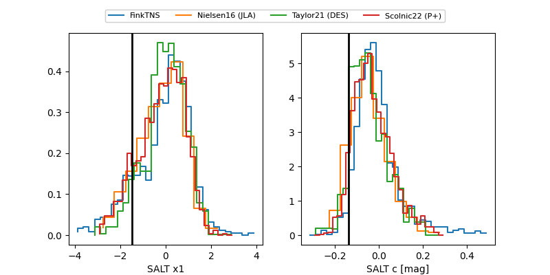

2026ahq
Target 2026ahq at 2026-01-28 09:16
Aliases and brokers:
FINK: link
Lasair: link
ALeRCE: link
TNS: link
YSE: link
alt names
ZTF26aaazchz (ztf,fink_ztf)
2026ahq (tns,yse)
ATLAS26aor (atlas)
Coordinates:
equatorial (ra, dec) = 113.5560,-4.81942
equatorial (HMS+DMS) = 07:34:13.45,-04:49:09.89
galactic (l, b) = (222.1616,+7.25554)
Flags:
confirmed ia
Photometry:
last atlasc=18.19, atlaso=18.34, ztfg=18.17, ztfr=18.25
2 atlasc, 5 atlaso, 5 ztfg, 4 ztfr detections
Lightcurve

Visibility


Additional plots
